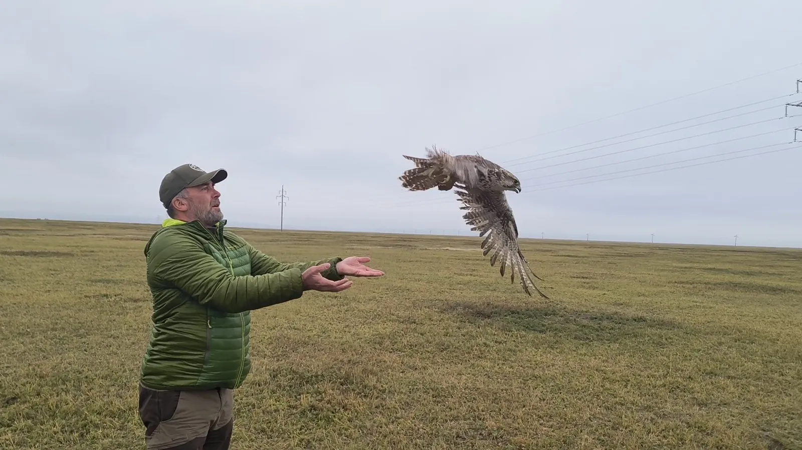
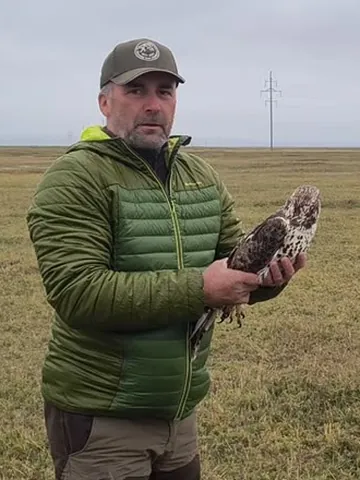

Niečo o nás
OZ Divé krídla
Sme občianske združenie, ktorého cieľom je podporovať a rozvíjať aktivity smerujúce k pozitívnemu prístupu obyvateľstva k ochrane živočíchov a životného prostredia so zvýšeným zameraním na dravé vtáky.

Kto sme
Ciele občianskeho združenia
- 1Ochrana a podpora dravých vtákov a sov na území Slovenskej republiky a zvyšovanie ich počtu vo voľnej prírode.
- 2Odborná a komplexná starostlivosť spojená s odchytom živočíchov a v prípade potreby aj liečenie handicapovaných živočíchov a ich príprava na návrat do prírody.
- 3Spolupráca s podobne zameranými domácimi a zahraničnými inštitúciami, organizáciami a orgánmi štátnej správy.
- 4Poradenstvo, vzdelávanie a osvetová činnosť, vrátane vzdelávacích prezentácií pre verejnosť na internete.
- 5Organizovanie kultúrnych, spoločenských a voľnočasových podujatí pre členov a priateľov.
- 6Hospodárska činnosť v súlade so všeobecne záväznými právnymi predpismi a poslaním združenia.
Kontakt
Kto za projektom stojí
-

Ing. Daniel Haraba
Vedúci projektu, kontaktná osoba
- Člen SKS od roku 1998
- Stredná priemyselná škola banícka v Banskej Štiavnici; Stavebná fakulta Bratislava – vodné hospodárstvo krajiny
- Sokoliarske vystúpenia v rámci Slovenska (1996 – 1999)
- Kanada – biologická ochrana sadov (2006)
Z našej činnosti – biologická ochrana sadov v Kanade (2006)
7 fotografií


Máte otázku?
Ing. Daniel Haraba · 0907 419 111